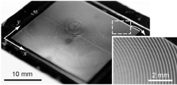
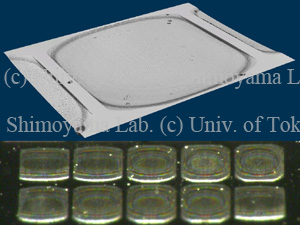
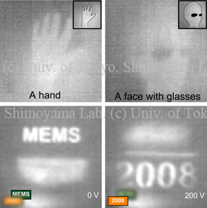

LWIRマイクロ光学素子
温度画像撮影のためのシリコンフレネルレンズ
本研究では、サーモグラフィに適した薄型・軽量のシリコンフレネルレンズを提案する。光線追跡法を用いて設計したフレネルレンズをシリコン3次元加工で製作し、温度画像を撮影した。ゲルマニウムレンズは加工が難しいためサーモグラフィは高価であった。シリコン3次元加工は複数マスクを利用したリソグラフィ等の加工方法に比べて大量生産に適しているため、価格競争力のある赤外線光学系を実現することができる。
Publications
- Tomoyuki Takahata, Kiyoshi Matsumoto, Isao Shimoyama, “Far-Infrared Fresnel Lens for Thermal Imaging,” IEEJ Transactions on Sensors and Micromachines, vol. 133, no. 7, pp. 274-279, 2013. (Full text is in Japanese) [Paper]
LWIRセンサのための傾斜放物面反射レンズ
赤外光を集光するための傾斜放物面反射レンズを考案した。様々な大きさの長方形の開口部を持つマスクを用いたマイクロローディング効果を利用した2段階のエッチングにより、表面が滑らかで垂直な壁を持つ傾斜パラボロイドを作製した。軸が30度傾いた放物面レンズでLWIR光を集光したところ、LWIR光源の実像の大きさは110μmであり、レンズの公式から得られる結果と一致した。
Publications
- Makoto Ohira, Yutaka Koyama, Fumiji Aita, Sho Sasaki, Masatoshi Oba, Isao Shimoyama, Tomoyuki Takahata, and Masafumi Kimata, “Micro Mirror Arrays for Improved Sensitivity of Thermopile Infrared Sensors,” The 24th IEEE International Conference on Micro Electro Mechanical Systems (MEMS ’11), pp. 708-711, Cancun, Mexico, 23-27 January, 2011. [Proceedings]
- Tomoyuki Takahata, Kiyoshi Matsumoto, and Isao Shimoyama, “Tilted Paraboloidal Reflective Lens for Far Infrared Sensor Fabricated by Mask with Rectangular Openings,” The 22nd IEEE International Conference on Micro Electro Mechanical Systems, pp.975-978, Sorrento, Italy, January 26-29, 2009. [Proceedings]
Parylene-on-Liquid-Depositionによる可変焦点LWIR結像レンズ
小型LWIRカメラ用の可変焦点結像レンズを報告する。シリコン基板とパリレン薄膜の間に液体パラフィンの液滴を挟み、液滴の表面に直接パリレンを蒸着させる（Parylene-on-Liquid-Deposition）。レンズの表裏にはそれぞれ電極が作られており、電圧をかけると電極同士が引き合って液体がレンズの中心に向かって押し出される。その結果、レンズの曲率が大きくなり、焦点距離が短くなる。0.2mm厚の流動パラフィンを用いた構造体の透過率は約10%であった。人体のLWIR画像を撮影することも確認した。焦点距離を調整しても画像は鮮明であり、直径7 mmのレンズの焦点距離は、初期値の43%まで短縮することができた。
Publications
- Hiroyuki Kojo, Nguyen Binh-Khiem, Tomoyuki Takahata, Eiji Iwase, Kiyoshi Matsumoto, Isao Shimoyama, “Varifocal Infrared Imaging Lens by Parylene-on-Liquid-Deposition,” Asia-Pacific Conference on Transducers and Micro-Nano Technology 2008 (APCOT '08), 2S32, Tainan, Taiwan, June 22-25, 2008.